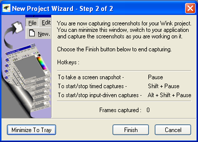
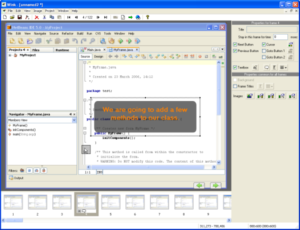
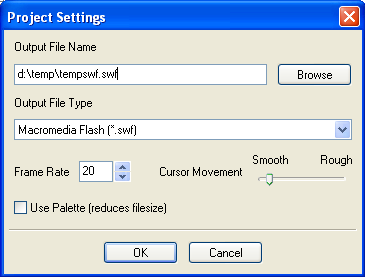
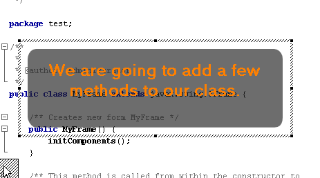
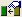
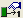
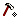

Creating a Flash Demo of NetBeans IDE
Contributed and maintained by John Jullion-Ceccarelli
Want to create your own Flash demo of NetBeans IDE functionality? Here's some
steps to get you producing slick, professional looking demos with free tools.
Getting Ready
This tutorial uses Wink,
a great free tool for creating Flash demos.
Installing the NetBeans Wink Templates
The NetBeans team has put together a
set of templates for callouts, buttons, preloaders, and control bars.
Unzip the ZIP file straight over your DebugMode installation folder
(usually C:\Program Files\DebugMode on Windows machines).
To verify that you unzipped to the right folder, check to make sure that all
the button images (i.e., nb_next.png) are placed in the DebugMode\Wink\Buttons
folder.
Setting the Window Size and Positioning
The final resolution of your Flash demo should not be bigger
than 800x600 pixels. You can do either of the following:
- Set your IDE window to be 800x600.
- Only capture a 800x600 area of the IDE. For example, if you're just showing
Source Editor features, you can just capture the Source Editor area and not
the rest of the IDE.
- Use a larger IDE window (for example, 1024x768) and then resize the Flash
demo to 800x600. If you are going to do this, set the IDE to use a larger
font size by starting it with the --fontsize 14 switch.
Note: You can use an application like AutoSizer
to automatically resize your window.
Since you're only capturing a small area of your screen, you
need to make sure that any menus and dialogs that you open appear in the capture
area. Move the IDE window to the middle of the screen and open a few large dialogs
(like the new Project wizard) to make sure they don't run outside of the IDE
area. When you open contextual menus, try to right-click in the upper left of
the Source Editor so that the menus also stay inside the IDE window area.
Scripting Your Demo
Although you can do a lot of processing after you've captured
the demo, it's always best to know exactly what you're going to show before
you start. If you're working from a text tutorial on netbeans.org, go through
the tutorial several times to make your movements smooth. If creating something
totally new, write out a script for yourself to follow.
Capturing a Demo
You've installed Wink and set up the IDE for capture. Let's get going.
Starting a Wink Capture
- Start Wink and choose File > New Project to start a capture session.
The following dialog opens:

- Make sure the Timed Capture Rate is set 5 frames/second. This is
important so that you demo looks smooth without producing a huge file size.
- A green box also outlines the area that will be captured. If you are capturing
the whole IDE window, click Choose and then select the IDE window. The capture
box adjusts automatically. If you are only capturing part of the IDE window,
adjust the box by hand. Unless you plan to shrink the final flash movie to
a smaller size, the size should not exceed 800x600.
- Click OK. A Wink icon
appears in the system tray and the following dialog box appears:

- Minimize the dialog to tray or move it out of the way and start capturing
your demo.
Capturing your Demo
There are two types of captures you can take:
- Time-driven captures (Shift-Pause) Time-driven captures just takes
a lot of snapshots of everything that happens on the screen. When Wink is
taking a time-driven capture, the system tray icon displays a flashing box
.
- Input-driven captures (Alt-Shift-Pause) Input driven captures only
take a snapshot everytime you click or type something. Wink then fills in
all the motion between snapshots. When Wink is taking an input-driven capture,
the system tray icon changes to
 .
.
So which to use? It depends on your style. Time-driven captures are more natural
for most people, but you end up with a lot of excess mouse motions that you
then have to edit out.
Input-driven captures are cleaner, but the timing is often too fast in some
places and too slow in others. Also, when something happens that wasn't caused
by a mouse click or typing on the keyboard, Wink misses it. For example, when
you open a menu Wink takes a snapshot, but if you then open a submenu by just
hovering your pointer over it, Wink doesn't take a snapshot. You can resolve
this by manually forcing a snapshot with the Pause button.
The best approach depends on you. I recommend taking time-driven captures,
but being very careful to only capture things that are part of the script. Whenever
I'm not sure, I hit Shift-Pause to pause the capture and plan out what I'm going
to do next. As we'll see later, cleaning up the Wink demo is not too difficult,
either.
Note: Wink often hangs when working with very long files. If you're doing a
long demo (longer than five minutes) consider splitting the demo up into several
Wink projects. You can then paste each project into one master project.
Finishing your Capture
Pause the capture, then right-click the Wink system tray icon and choose Finish
Capture. The
Editing Your Wink Demo
Now you've captured your demo and are back in the main Wink window, shown below.
As you can see, there are thumbnails of each snapshot on the bottom. You can
delete, copy, and rearrange snapshots as you like. The right sidebar lets you
enter callouts, buttons, and other elements.

Click to view full image
Rendering and Viewing Your Demo
First let's see what your demo looks like with no post-capture
editing.
-
Press F7 or click the
button. The first time you render your demo, the project settings dialog
box appears.

- Set the Frame Rate to 20, set the output file name, and click OK.
Wink creates the SWF file and a sample HTML file in which to display it.
- Press F8 or click the
button. The demo is displayed in your web browser.
Note that after the first time you render, F7 overwrites your old SWF file.
If you want to change the output file name or frame rate, click the
button.
Removing Frames
It is very important that you remove any stray mouse motions.
In a flash demo, especially one without sound, the user assumes that each mouse
motion is important and easily gets confused when the mouse moves for no apparent
reason.
Select any frames that need to be removed and press Delete.
You can hold down the Shift key and use the arrow keys to "run" through
your demo almost at real time. Even if your cursor does not stray from the intended
path much, you can remove any excess frames between the start point and the
end point. Wink will fill in the cursor motion between the two spots and it
will look much smoother.
Adding Callouts and Buttons
Whenever you are about to perform an action that has significance,
you should introduce it with a callout, as shown below.

You can add a callout by:
- Copying and pasting a callout that is already correctly configured. This
is the recommended method. Open the DebugMode/Wink/nb-wink-template.wnk
project and copy and paste any of the callouts there.
- Click the Textbox checkbox in the right sidebar. Then click the
button to select the correct callout. Choose any of the nb_name
callouts. You also have to adjust the font to be 18pt bold and center aligned.
When you enter a callout, you also have to set how to pause long enough for
the user to see it. You can enter a time delay in the right panel, or enter
Next and Previous buttons. Use the following buttons in the right sidebar to
set the correct NetBeans images for the buttons:
 - Next Button - DebugMode\Wink\Buttons\nb_next.png
- Next Button - DebugMode\Wink\Buttons\nb_next.png
- 
- Previous Button - DebugMode\Wink\Buttons\nb_previous.png
- 
- Goto Button 1 - DebugMode\Wink\Buttons\nb_replay.png
Note: If you do not see these options, make sure you correctly
installed the NetBeans templates.
Adding Intro and Ending Slides
- Open the DebugMode/Wink/nb-wink-template.wnk project.
- Copy and paste the intro and ending slides from the template project into
your project. Note that Wink always pastes the slides before whatever slide
you select, so for the ending slides you will have to move the final slide
back before the ending slides.
- Replace the text in the callouts with the title and description of your
demo.
Setting the Preloader and Slide Bar
The preloader is the image that displays while a browser loads
your demo. The control bar is the bar at the bottom of the demo. We've produced
NetBeans-branded versions of both of these for you to use.
- Choose File > Preferences or click the 
button.
- Click the Choose button next to the Add preloader checkbox and select the
netbeans_black preloader.
- Click the Choose button next to the Add control bar checkbox and select
the netbeans_silver control bar.
Note: If you do not see these options, make sure you correctly
installed the NetBeans templates.
Publishing Your Demo
Make the ZIP of the demo available somewhere (they're often too big to e-mail)
and send us a link to Webmaster.
We'll add it to the NetBeans Media Library.
{kind=link}